Wjotek Siudmak
- Official Website
My projects


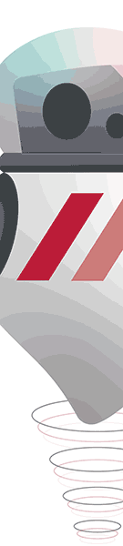
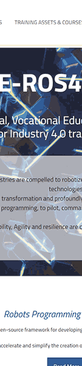
The Boat
Ce projet était une des trois illustration réaliser dans le cadre de l'exercice "pages 404" proposé par l'un de notre professeur. Nous devions réaliser une illustration pour une page 404 originale. Cet exercice était aussi un moyen de prendre en main l'outil Illustrator dans un premier temps, puis After Effect.
Cette illustration à été faite sur le theme de Moby Dick.

This is not a Tape.
Exercice de classe, nous dovions reproduire cette cassette sous illustrator.
J'ai décidé de rajouter le texte "ceci n'est pas une cassette" pour le clin d'oeil à l'oeuvre de Matisse "ceci n'est pas une pipe" car en effet, ce sont toute les deux des représentations des objets qu'ils présentent.

Remaking the a Dog breeding website
Ce projet à été créer en classe durant un cours d'UI-UX. Nous devions choisir un site dont nous deviosn faire une refonte du front end. J'ai choisit un site d'elevage canin.
Voila quelques images du site avant ma refonte :
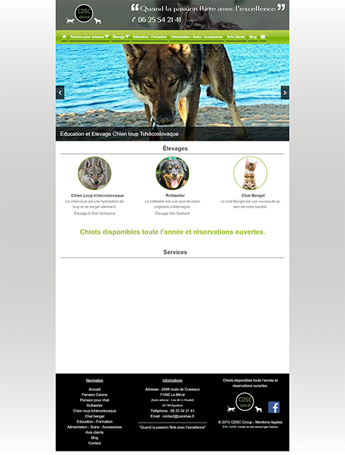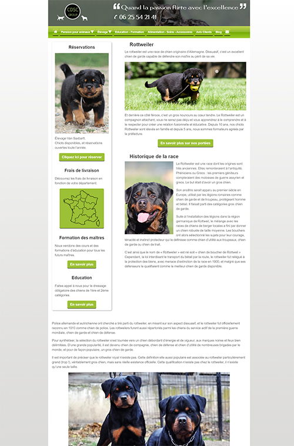
J'ai commencer par recréer une arborescence plus simple et adaptée aux demandes actuelles.
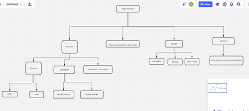
J'ai ensuite créer les wireframes des versions mobiles et desktop
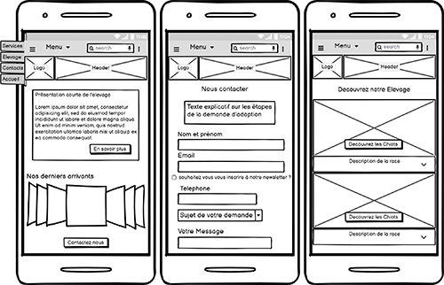 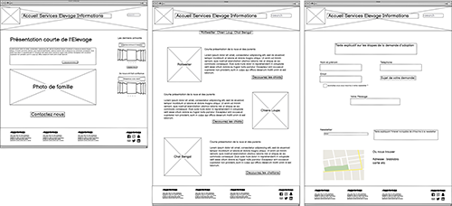
Puis j'ai travaillée sur la maquette, d'abord en version mobile, puis en version desktop. Vous trouverez à la suite les captures d'écran des maquettes.
Version Mobile


Version desktop
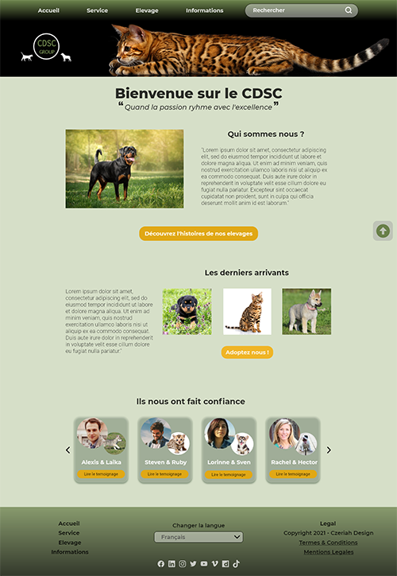 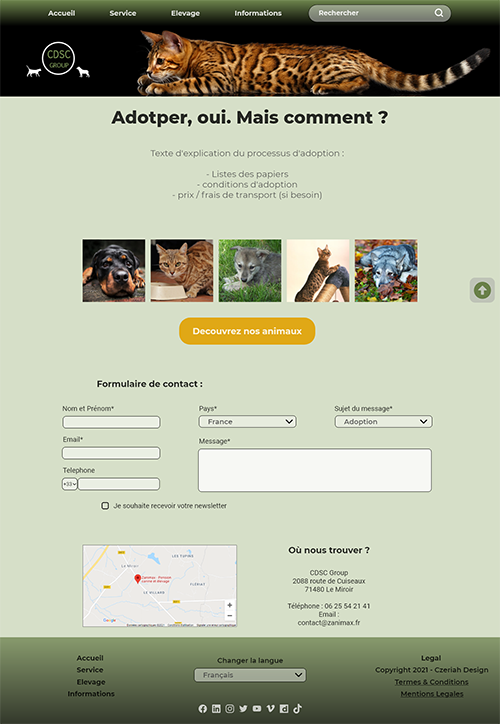
The Ghost
Ce projet fait partie de l'exercice de pages 404. Durant ma veille graphique je suis tombée sur une serie de petit fantômes que j'ai trouvé très mignon, j'ai donc eu envie d'en faire une page 404.
Le Fantome est représenté cherchant quelque chose, la page perdue, peut être ?
J'ai d'abord créer l'illustration sur Illustrator et l'ai ensutie animée sur After Effects.


The Glass Planet
Illustration crée sur Illustrator en utilisant un tutoriel Youtube
Voici le resultat final :

The Hackathon
Durant la formation, j'ai participer à un hackathon. Le sujet était de créer un site pouvant servir de portefolio des élèves des classes de design du Campus du Lac. Nous avons travaillé en groupe de 5 : Trois developpeurs et deux designers. Mon travail à surtout été la conception de la maquette pendant que ma collegue s'occupait du cahier des charges et de la partie marketting.
Nous avons travailler de manière collegiale avec nos collegues developpeur, ainsi le wireframe a été créer tous ensemble le wireframe afin que les dev ai au moins une structure sur laquelle travailler (nous avions 3 jours pour tout faire).
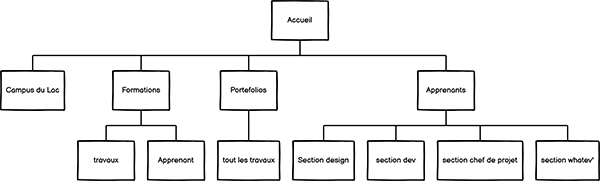

J'ai ensuite créer une charte graphique afin que les devs puissent retrouver facilement les fonts et les couleurs dont ils auront besoin pour la conception du site:
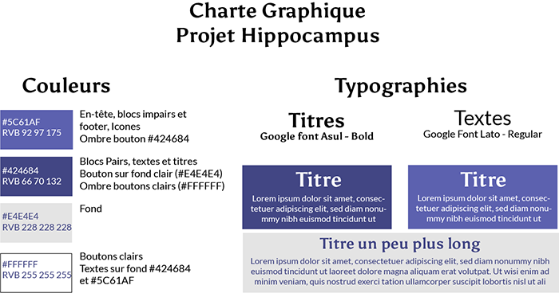J'ai pris le temps de designé un petit logo pour notre equipe. Nous avions choisit le nom "Hyppocampus", j'ai donc fait un hyppocampe sur illustrator :
La journée suivante à été dédié à la création de la maquette Mobile et Desktop du site :
Version desktop:

 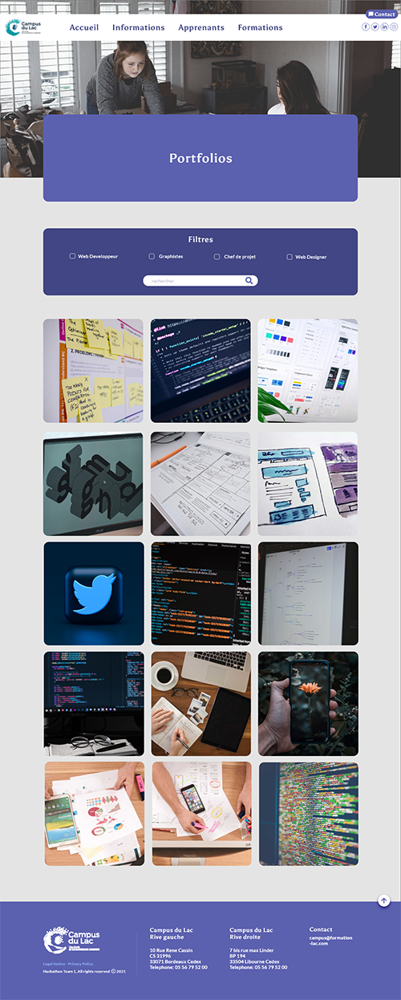
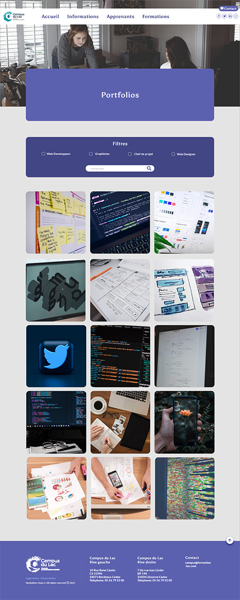
Version Mobile :
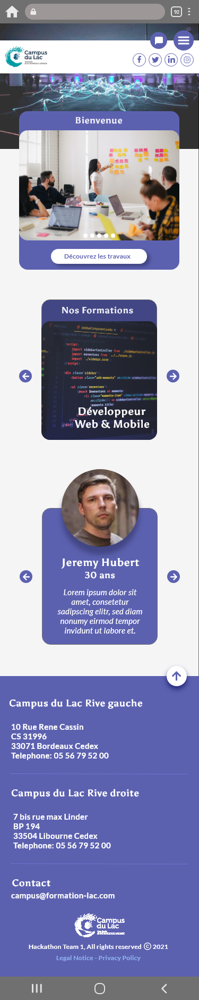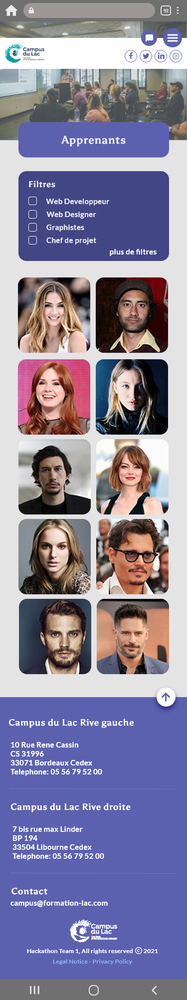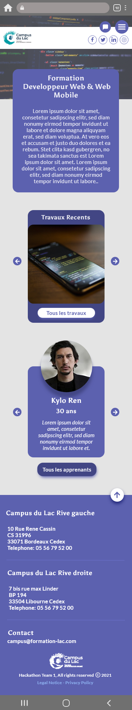 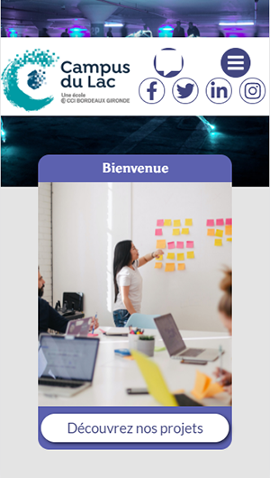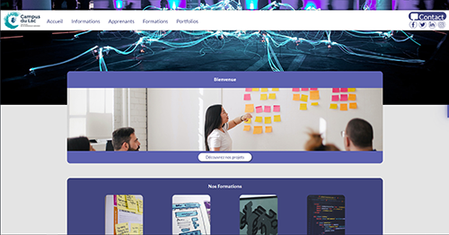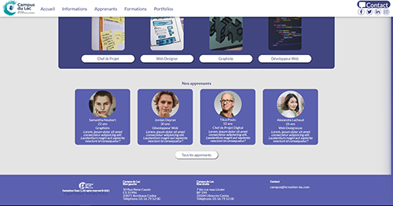Llewelynn's Knit
Au cours de ma formation, j’ai voulu travailler sur un site e-commerce. J’ai utilisé ce projet comme travail de conception et d’intégration.
Pendant mon temps libre, l’un de mes passe-temps est de créer des vêtements de poupée, en cousant, crochetant ou tricotant. J’ai décidé de joindre l’utile à l’agréable et ai imaginé comment je pourrais valoriser ce passe-temps en proposant mes créations sur un site e-commerce.
J’ai déterminé quelles pages seraient indispensables et me suis arrêtée sur les 9 suivantes :
- - Page d’accueil
- - Landing Page
- - une page type de liste d’articles
- - une page type d’un article
- - panier
- - paiement
- - Login page
- - sign in page
- - la page de contact.
J’ai commencé par le Wireframe, créé la charte graphique et enfin la maquette.
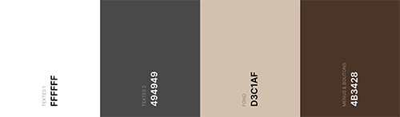J’ai d’abord déterminé la palette de couleur avec laquelle je souhaitais travailler. Je me suis arrêtée sur ces quatre couleurs. Je souhaitais quelque chose de chaud et accueillant.
J’ai ensuite effectué une recherche sur google font afin de trouver les polices de caractères qui me conviendraient le mieux, je me suis arrêté sur les deux suivantes.
J’ai choisi de travailler avec google font car les polices sont variées et la bibliothèque de fonts est disponible sur n’importe quelle machine.
J’ai choisi la Merriweather pour sa facilité à être lue et son aspect machine à écrire. La Kaushan a été sélectionnée pour les titres et le logo car je voulais une police qui se lisait bien mais qui avait un aspect "écriture manuscrite" pour accentuer le fait main.
Après ces descisions, le premier pas a été de faire un wireframe :


La maquette est passée par plusieurs stades : je pensais d’abord proposer le contact sur la page d’accueil, mais ai décidé plus tard de créer une page dédiée et de placer la partie "à propos" sur la page d’accueil.


En effet, cette partie a pour but de présenter le travail vendu sur le site et amener plus naturellement le visiteur à s’inscrire à Newsletter grace à laquelle il pourrait accéder à des exclusivités, des patrons etc.
En outre, bien que sachant que les parties paiement des sites sont peu modifiables quant au code, j’ai choisi de pousser la charte graphique et de le travailler à ma manière.

J’ai travaillé sur la version mobile, pour adapter les visuels et la présentation, simplifiant certaines pages.


Voxam, the Inclusive Podcast plateform
Durant l'un de nos cours, un de nos professeurs a proposé comme thématique "Montrer le son sur Internet". J’ai travaillé en groupe avec l’une de mes camarades et après quelques minutes de réflexion, les podcasts nous ont paru un sujet s’appliquant à l’intitulé. Nous avons décidé de créer un site d’hébergements de Podcast dont le but premier serait de rendre le medium accessible au plus grand nombre. Notre idée de base était de rendre l’accès à ce medium en pleine expansion possible aux personnes sourdes, mais nous avons très vite décidé d’agrandir notre cœur de cible à toute personne ayant un besoin d’accessibilité pour le contenu proposé.
Nous avons commencé l’élaboration d’un cahier des charges. Il nous a fallu contextualiser le projet et rédiger une raison d’être.
L’étape suivante a été de reconnaitre les besoins d’un tel projet et les contraintes auxquelles nous ferions face.
Une fois ce cahier des charges établi, nous avons conçu l’arborescence du futur site. Pour cela, nous avons fait une veille technique, en dressant une liste des sites proposant actuellement un service similaire ou pouvant s’en rapprocher. Nous avons, entre autres, examiné avec attention les sites de Spotify, YouTube, Sound cloud et le lecteur de musique Apple.
Nous avons ensuite réalisé une veille graphique afin de déterminer les tendances les plus populaires et nous en inspirer.
J’ai aussi effectué une recherche pour l’élaboration du logo. En effet, nous cherchions quelque chose pouvant inspirer le mouvement et le son, tout en étant facilement lisible : l’idée était de s’inspirer du logo de Spotify pour styliser le nom de notre plateforme. Nous avons donc cherché une police facile à lire pour les personnes atteintes de dyslexie ou de problèmes de vue.
Nous avons créé un tableau sur le site Trello afin de garder une trace de nos recherches et de notre avancée sur le projet : Nous avons longtemps réfléchi à un nom, et au logo que nous souhaitions.
Le logo en lui-même est passé par un grand nombre de stade, j’ai d’abord commencé par faire un premier jet (ci-contre), mais cela ne convenait pas. Un designer expérimenté nous a expliqué que du flou dans un logo risquait d’induire une impression de manque de définition du concept.
Nous avons donc demandé de l’aide à l’un de nos camarades car nous avions envie d’une mascotte animale ; il a donc proposé une déclinaison avec différents animaux. Finalement notre choix s’est arrêté sur la petite patte de chat qui ressemblait également à un micro vintage.
Pour le nom, nous avons choisi Voxam. D’une part c’est le nom d’un médicament à base de sérotonine, un neurotransmetteur plus connu sous le nom d’hormone du bonheur, ce qui est le sens de notre démarche car nous souhaitons apporter du bien-être à nos utilisateurs. Mais surtout, il contient le mot "vox" qui veut dire voix en latin et correspondait bien à ce que nous cherchions à représenter pour notre plateforme de marque.
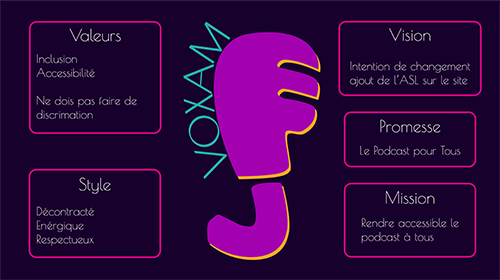En parallèle, nous avons travaillé sur la colorimétrie et avons réalisé plusieurs planches "tendance" s'inspirant du courant Retrowave. Nous nous sommes arrêtées sur 6 couleurs, en prenant garde à ce qu’elles soient adaptées à tout type de problèmes de vision (contrastes etc…) tout en prenant en compte le symbolisme qu’elles contiennent.
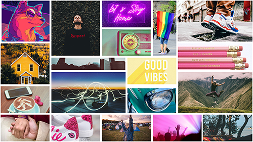Après cela, il ne nous restait plus que la conception de la maquette du site.
Ma camarade et moi nous sommes réparti les tâches et avons travaillé à quatre mains sur le même fichier. Je me suis principalement occupée de la partie "utilisateur"(voir ci-dessous) tandis qu’elle s’est concentrée sur la partie "créateur". Nous avions fait le choix très tôt de proposer une version claire et sombre du site, et avons donc effectué notre recherche colorimétrique dans ce sens.
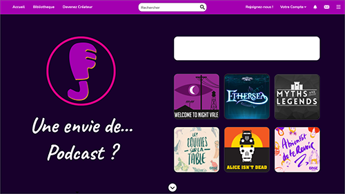 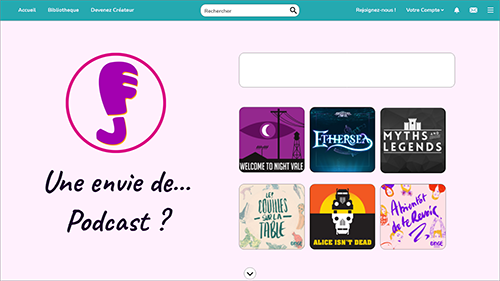
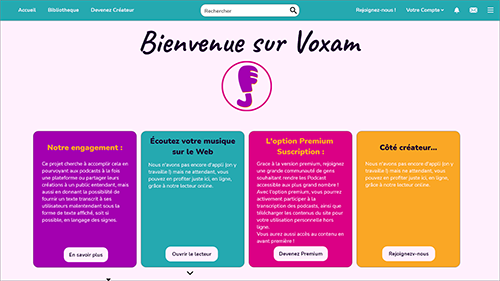 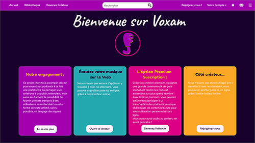
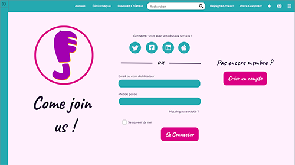 
The Snowflake
Cette illustration à été l'une de mes premières illustration sur Illustrator. Cela a été un bon moyen de prendre en main l'outil plume pour créer des formes complexe ainsi que l'utilisation des différents calques et des couleurs.
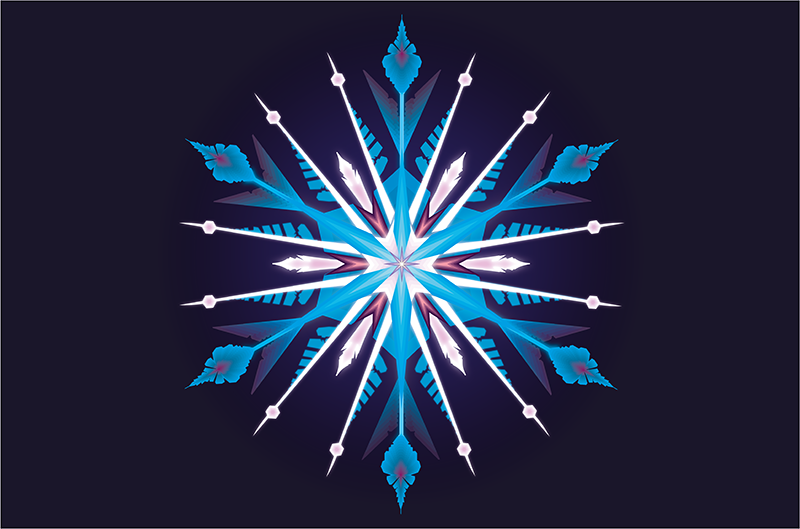The mystery of the missing sock
This project was part of the "404" project. The idea was to create a 404 page on a theme of our choice. I was inspired by a story one of my classmate told us, the case of the missing sock, to which the ending was that it had been raken by UFO's.I first created the illustration using Illustrator and then animated it with After Effect.

The Mascotte
Durant mon stage, j'ai créer la mascotte de l'association Cluster Aquitaine Robotics.
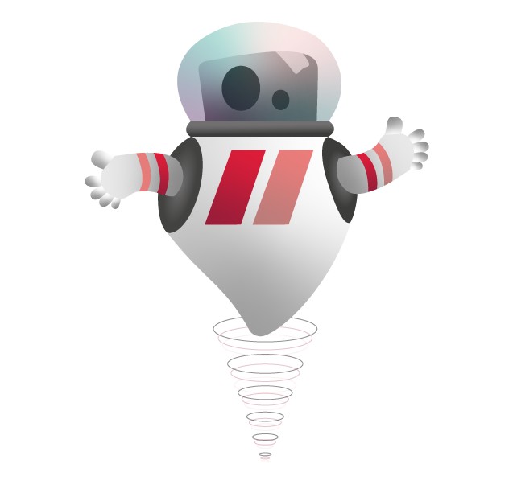Speed of Sound
Ce projet est un groupe de musique fictif dont j'ai créer la strategie marketting ainsi que leur identité de marque
L’un de mes exercices de cours était un sujet libre. J’ai choisi de créer un faux groupe de musique et d’en faire la promotion.
Le groupe que j’ai choisi de monter est un groupe de rock alternatif Asiatique. J’ai donc commencé par créer deux moodboards : la première planche à thème asiatique et la seconde pour l’ambiance du groupe.


J’ai ensuite réalisé un brand book sur InDesign, dans lequel j’ai créé un logo sur Illustrator.
Le logo est un acronyme de leur nom complet "SOS" pour Speed of Sound. Le voici décliné dans les différentes couleurs de la charte graphique.

A la suite de ça, j’ai décidé de créer sur Photoshop quelques visuels respectant la charte graphique. Il s'agit de bannières de publicité compatibles avec une utilisation sur un site e-commerce.
J'ai été chercher des brushs pour la fumée à l’arrière et détouré les photographies afin de réaliser ces visuels.


J’ai aussi céer un storyboard sur Photoshop et une vidéo de promotion sur After Effects.
J’ai également maquetté une newsletter sur Photoshop.

Le plan marketing était comme suit :
SOS est un nouveau groupe de musique, leur promotion se ferait principalement via les réseau sociaux sous forme de ‘chasse au trésor ‘. Chaque jour, un des réseaux du groupe lancerait un code, à saisir sur le site officiel afin de débloquer un contenu exclusif, et ce, jusqu’à la date de sortie de l’album (ou de la tournée).
L’idée était de garder l’attention de leur fan, créer une sensation d’attente et une certaine frustration qui elle-même génèrerait le désir d’en apprendre plus sur le groupe. Je me suis inspirée pour cela du marketing des groupe de KPop, ainsi que de celui de certains groupe Japonais.
J’ai effectué une longue recherche sur mon cœur de cible et une veille graphique et concurencielle.
Czeriah
Création de l'identité de marque "Czeriah"
E.ROS4.PRO
Site E.ROS4.PRO